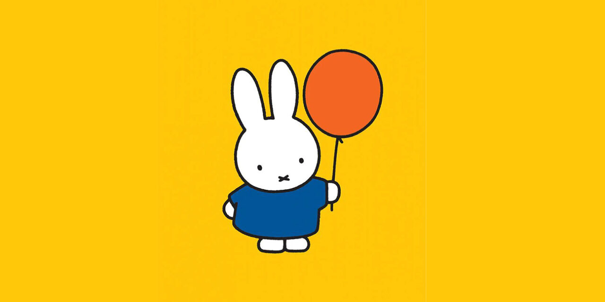

Welcome to Miffy's World!
Fact 1: Miffy's original Dutch name, "Nijntje," is a shortened version of "konijntje," which means "little rabbit".

Fact 2: The character was created in 1953 by Dutch artist Dick Bruna.

Fact 3: Miffy was initially drawn to look like a toy animal with floppy ears, but by 1963, her design was updated.

Fact 4: Miffy's creator, Dick Bruna, decided to make her a girl because he wanted to draw her in a dress.

Fact 5: The Miffy books are known for their minimalist graphic style using black lines and a limited color palette.

Fact 6: Each Miffy book contains twelve pages with one illustration and four lines of rhyming verse. Some books have no text.

Fact 7: Miffy books address situations that children can understand, like going to school or the hospital.

Fact 8: Miffy became a mascot for radical ecological direct action groups in the early 1990s.

Fact 9: Miffy is sometimes mistaken for a Japanese character, because of similarities in style to Sanrio's Hello Kitty.

Fact 10: In 2008, a new species of booklouse from Peru was given the scientific name Trichadenotecnum miffy.